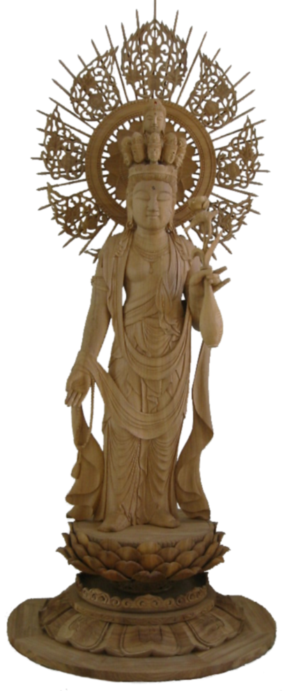

"The Buddha said to Endless-Intent Bodhisattva: If living beings hear the name of Kanzeon Bodhisattva and call his name with all their hearts when they are under various sufferings, he will immediately perceive their voices, and cause them to emancipate themselves from the sufferings . . . . . By all these merits, he sees all living beings with his compassionate eyes. The ocean of his accumulated merits is boundless. Therefore, bow before him."
Lotus Sutra Chapter 25
Kanzeon - Kannon - Avalokitesvara - kuan-yin - Chenrezi - He Who Regards the Cries of the World
This statue was carved by The Great Engraver Ryu-unYamataka of Kobe, Japan in 2002.
Jimyo Takahashi who was one of his students donated it to Rev. Shokai Kanai in November of the same year.
The wood of the statue is called Yakusugi that grew in Yakumima, a southern island of Japan. Yakusugi or cryptomeria age estimates ranging from 2,000 to 7,000 years old. Thus, the statue of Avalokitesvara has survived at least twenty centuries and will be alive as a statue of Kannon Bodhisattva adored by hundreds and thousand people for many centuries to come.